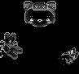
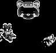
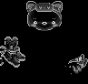
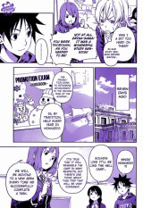

ImageMagick Examples --
 Image Comparing
Image Comparing
- Index
-
 ImageMagick Examples Preface and Index
ImageMagick Examples Preface and Index
-
Methods of Comparing Images -- what is different?
-
Comparison Statistics -- how different?
-
Sub-Image Matching and Locating Finding smaller images in larger.
-
 Finding Duplicate Images -- finding two images that are the same
Finding Duplicate Images -- finding two images that are the same
-
Sorting Images by Type -- image classifications for comparing
-
Handling Specific Image Types
-
Image Metrics -- finger-printing images for comparision
-
Web Cameras -- Finding what has changed in fixed cameras
Methods of Comparing Images
Compare Program
The "magick compare" program is provided to give you an easy way to compare two similar images, to determine just how 'different' the images are. For example, here I have two frames of an animated 'bag', which I then gave to "magick compare' to highlight the areas where it changed.
magick compare bag_frame1.gif bag_frame2.gif compare.gif |
![[IM Output]](../images/bag_frame1.gif)
![[IM Output]](../images/bag_frame2.gif)
![[IM Output]](compare.gif)
x:" output format, or using the "display" program. For example..
magick compare bag_frame1.gif bag_frame2.gif x: magick compare bag_frame1.gif bag_frame2.gif miff:- | display |
|
![[IM Output]](compare_color.gif)
|
|
![[IM Output]](compare_colors.gif)
|
-compose src" to the options to remove it.
|
|
![[IM Output]](compare_mask.gif)
|
magick bag_frame1.gif bag_frame1.jpg magick compare bag_frame1.gif bag_frame1.jpg compare_lossy_jpeg.gif |
![[IM Output]](bag_frame1.jpg)
![[IM Output]](compare_lossy_jpeg.gif)
magick compare" reports a lot of differences. By using a small Fuzz Factor you can ask IM to ignore these minor differences between the two images.
|
![[IM Output]](compare_fuzz.gif)
|
-metric" setting of 'AE' (short for "Absolute Error" count), will report (to standard error), a count of the actual number of pixels that were masked, at the current fuzz factor.
Difference Images
To get a better idea of exactly how different the images are, you are probably better of getting a more exact 'difference' composition image....
|
![[IM Output]](difference_jpeg.gif)
|
magick compare" showed that JPEG created a lot of differences between the images, a 'difference' composition was quite dark, indicating that all the differences were relatively minor. If the resulting image looks too black to see the differences, you may like to Normalize the image (using the more mathematically correct "-auto-level", so as to enhance the results.
|
![[IM Output]](difference_norm.gif)
|
|
![[IM Output]](difference_frames.gif)
|
difference' compose method is associative, the order of the two images in the above examples does not matter, although unlike "magick compare", you can compare different sized images, with the destination image determining the final size of the difference image. The different method is even more useful when used with the "magick" program, as you can process the resulting image further before saving or displaying the results. For example you can threshold and merge each of the color channels to to generate a mask of any pixel that changed color between the two images.
|
![[IM Output]](difference_mask.gif)
|
magick compare" program does, but with more controls as to the color and output style. However as you can see it tends to find even the smallest minor change between two images. If the images are from a lossy image file format, such as JPEG, or a GIF image that required color reduction and dithering (color quantization), then that would probably match everything in the image. As such it it typically not very useful. For better results you can try to figure out just how different the pixel colors are. For example we can gray-scale the result, so as to get a better comparison image, than a colorful one.
|
 |
magick compare", the difference image shows a mixture of both images combined in the final result. For example look at the weird 'talisman' seems to appear in the forehead of the cat. This was originally the handle of the bag from the first image. This merger can make it confusing as to exactly what differences you are seeing, and you see a megere of both the additions and removals from the image. Because of this confusion of details, the "magick compare" is usually the better way for us humans to view, while the 'difference' image is the better method for further processing the image. However grayscaling a difference image will simply average (actually a weighted average) the RGB distances together. As a result a single bit color difference could be lost though Quantum Rounding Effects. If even the smallest difference between images is important, a better method is to add the separate color channels of the difference image, to ensure you capture ALL the differences, including the most minor difference.
|
![[IM Output]](difference_add.gif)
|
|
 |
|
 |
-colorspace Gray' difference image (as above), but it is much more accuriate representation of color difference. You could leave of the second 'Pow 0.5' modification in which case you will get a Squared difference Image. There are other color distance metrics, which you can read about on the Color Difference, Wikipedia page. Most of these involve generating vector differences (see last) but using a different colorspace, such as LAB or LUV. This would however be more important in comparing real world color differences (EG: human vision difference measures). Also see Background Removal, where difference images like the above are used to perform background removal. You may also like to look at this external page on Change Detection as a practical example of its use.
Flicker Compare
An alternative to the "magick compare" program to see differences between images is to do a flicker comparison between the similar images at a reasonably fast rate.
|
flicker_cmp" which flips between the two images, just like the above example. It also adds a label at the bottom of the displayed image so as to detail which image you are seeing at any particular moment.
Comparing Animations
You can also compare the differences in two coalesced animations using a special 'film strip' technique. See a similar 'append' technique in Side by Side Appending. Basically we append all the animation frames together to form one large, and long image. The two images are then compared and a new animation is created by splitting up the animation into separate frames again. For example...
magick \( anim1.gif -coalesce -append \) \
\( anim2.gif -coalesce -append \) miff:- | \
magick compare - miff:- |\
magick - -crop 160x120 +repage anim_compare.gif
|
-crop" size much match the original size of the animation. Also the animation will lose any variable time delays that it may have had, using a constant time delay based on the first frame of the original animation. Another image comparison technique useful for animations is used to locate all the areas in which an animation changes, so as to divide the animation's unconnected parts. This way you can separate a large animations into a number of smaller animations. See Splitting up an Animation.
Comparison Statistics
Just how different are two images?

Statistics from difference image...
The following outputs verbose information and extracts just the
section containing the channel statistics of the image....
magick image1 image2 -compose Difference -composite \
-colorspace gray -verbose info: |\
sed -n '/statistics:/,/^ [^ ]/ p'
The numbers in parenthesis (if present) are normalized values between
zero and one, so that it is independent of the Q level of your IM.
If you don't have these numbers, you should think of upgrading your IM.
To get the average (mean) grey level as a percentage you can use this
command...
magick image1 image2 -compose Difference -composite \
-colorspace gray -format '%[fx:mean*100]' info:
For non-percentage you can use the even simplier..
magick image1 image2 -compose Difference -composite \
-colorspace gray -format '%[mean]' info:
Compare Program Statistics...
You can get an actual average difference value using the -metric
magick compare -metric MAE image1 image2 null: 2>&1
Adding -verbose will provide more specific information about each separate
channel.
magick compare -verbose -metric MAE rose.jpg reconstruct.jpg null: 2>&1
Image: rose.jpg
Channel distortion: MAE
red: 1884 (0.028748)
green: 1532.34 (0.023382)
blue: 1691.25 (0.0258068)
all: 1702.53 (0.025979)
Their are a number of different metrics to chose from.
With the same set of test images (mostly the same)
Number of pixels
AE ...... Absolute Error count of the number of different pixels (0=equal)
This value can be thresholded using a -fuzz setting to
only count pixels that have a larger then the threshold.
As of IM v6.4.3 the -metric AE count is -fuzz effected.
so you can discount 'minor' differences from this count.
magick -metric AE -fuzz 10% image1.png image2.png null:
Which pixels are different can be seen using the output
image (ignored in the above command).
This is the ONLY metric which is 'fuzz' effected.
Maximum Error (of any one pixel)
PAE ..... Peak Absolute Error (within a channel, for 3D color space)
PSNR .... Peak Signal to noise ratio (used in image compression papers)
The ratio of mean square difference to the maximum mean square
that can exist between any two images, expressed as a decibel
value.
The higher the PSNR the closer the closer the images are, with
a maximum difference occurring at 1. A PSNR of 20 means
differences are 1/100 of maximum.
Average Error (over all pixels)
MAE ..... Mean absolute error (average channel error distance)
MSE ..... Mean squared error (averaged squared error distance)
RMSE .... (sq)root mean squared error -- IE: sqrt(MSE)
Specialized metrics
MEPP .... Normalized Mean Error AND Normalized Maximum Error
These should directly related to the '-fuzz' factor,
for images without transparency.
With transparency, makes this difficult the mask should
effect the number of pixels compared, and thus the 'mean'
but this is currently not done.
FUZZ fuzz factor difference taking transparency into account
NCC normalized cross correlation (1 = similar)
I produced the following results on my test images...
_metric_|__low_Q_jpeg__|__black_vs_white__
PSNR | 29.6504 | 0
PAE | 63479 | 65535
MAE | 137.478 | 65535
MSE | 4.65489e+06 | 4.29484e+09
RMSE | 2157.52 | 65535
The first column of numbers is a compare of images with low-quality JPEG
differences, where the test image was read in and saved with a very low
-quality setting.
The second "black vs white", is a compare of a solid black image verses
a solid white image. If the 'average color' of the image is ignored
by the comparision then the resulting value will be very small. This
seems only to be the case with the PSNR metric, as all others produced
a maximum difference value.
The e+06 is scientific notation, on how many places to shift the
decimal point. EG: 4.65489e+06 --> 4,654,890.0
Thus is equal to about 4 million, and is the square of 2157.52
WARNING: numbers are dependant on the IM Quality (Q) levels set at compile
time. The higher the quality the larger the numbers. Only PSNR should be
unaffected by this. For this reason IM also gives you a 'normalized'
result that is uneffected by the compile time quality setting, though may
still have minor 'quantum' or 'interger rounding' effects.
I have NOT figured out if there are any of the existing "-define" options
usable the "compare" function.
NOTE for opaque colors AE -fuzz and RMSE distances are equivelent.
HOWEVER, when transparent colors are involved AE fuzz factor testing
will treat two different fully-transparent colors as being the same
while RMSE will treate them as being different!
For example...
To AE fully-transparent white and fully-transparent black are the same.
magick compare -metric AE xc:#0000 xc:#FFF0 null:
0 (0)
To RMSE they are the same color as they are fully-transparent
magick compare -metric RMSE xc:#0000 xc:#FFF0 null:
0 (0)
Dissimilarity-threshold
If you get a 'too different' error, you can disable that using...
-dissimilarity-threshold 1.0
But what is this threshold?
For more info, see my very old raw text notes... Image Comparing, Tower of Computational Sorcery
Matching Sub-Images and Shapes
Using "compare -subimage-search" option...
magick compare -subimage-search large_image.png sub-image.png results-%d.png
This produces two images
results-0.png
which displays the matching location
results-1.png
which is a map of possible top-left corner locations showing how well
the sub-image matches at that location.
Note the second image is smaller, as it is only top-left corner locations.
As such its size is large_image - small_image + 1
The search however is based on a difference of color vectors, so produces
a very accurate color comparison.
The search basically does a compare of the small image at EVERY possible
location in the larger image. As such it is is slow! very very slow..
The best idea is to compare a very very SMALL sub-image to find possible
locations, than use that to then do a difference compare at each possible
location for a more accurate match.
Have a look at the script
https://usage.imagemagick.org/scripts/overlap
and associated discussion
Overlapped Images
Which looks at locating 'high entropy' sub-images of one image to search
for posible matches in a second image so the overlap offset between the
two images can be discovered, and the images merged into a larger image.
Another discussion uses sub-image searches to find tiling patterns in
larger images, with the goal of generating tilable images
Stitching image over a canvas
Example using RMSE and the new -grayscale function to merge the
separate color difference channel results into a final image
magick large_image.png small_image.png miff:- |
magick compare -metric RMSE -subimage-search - miff:- |
magick - -delete 0 -grayscale MS show:
Similarity Threshold
As many time people are only interested in the first match that matches.
As soon at this 'good' match is found, there is no need to continue
searching for another match. The -similarity-metric defines what you
would regard as a good match.
A "-similarity-threshold 0.0" will abort on the very first 'perfect' match
found, while "-similarity-threshold 1.0" (the default) will never match and
will search every posible point. A value between will set a color only
'fuzz' factor on what you would find an acceptable match.
Note that if the sub-image search is aborted, the second 'map' image will
only contain a partial result, only showing the results up until the comapre
aborted its search).
Some Basic Sub-Image Search Examples....
Grab a screen shot of a terminal window ("screen.png"),
and crop out an image of a single letter or word ("letter.png").
Just report first match.... for speed,
immeditally abort after finding that first match.
Don't bother outputing the incomplete image results.
magick compare -subimage-search -metric AE -similarity-threshold 1.0 \
screen.png letter.png null: 2>&1
NOTE speed will be highly dependant on where in the image that first
match is found.
Find all occurances of exactly that image,
as an image (white dots on matches, black elsewhere)
magick compare -subimage-search -metric AE \
screen.png letter.png miff:- 2>/dev/null |
magick - -delete 0 show:
Extract a list of the coordinates of all matching letters (white dots)
(as an enumerated pixel list, ignoring anything black)
magick compare -subimage-search -metric AE \
screen.png letter.png miff:- 2>/dev/null |
magick - -delete 0 txt:- | grep -v '#000000'
Just the coordinate list
magick compare -subimage-search -metric AE \
screen.png letter.png miff:- 2>/dev/null |
magick - -delete 0 txt:- | sed -n '/#FFFFFF/s/:.*//p'
NON-ImageMagick sub-image search solutions...
"visgrep" from the "xautomation" package.
This is much simpler sub-image search program, that only outputs a
list of coordinates for the matches (or even multiple sub-image matches).
Because it is so much simpler (for near exact matching) and not trying
to generate 'result images' for further study, it is also a LOT FASTER.
For example...
visgrep screen.png letter.png
Timed results
using "compare" to get just the first match 0.21 seconds
using "compare" to get a 'results image' 1.56 seconds
ditto, but extracting the coordinate list 1.76 seconds
using "visgrep" to get all matching coordinates 0.09 seconds
Other Methods of sub-image searching....
HitAndMiss Morphology
This is essentually a binary match, where you define what pixels much be
'background' and what must be forground. However it also allows you to
define areas where you don't care if the result is a foregorund or
background.
Basically a binary pattern search method.
Correlate (a Convolve variant)
This is similar to Hit and Miss but using greyscale values. Positive values
for forground and negative values for background, and zero for don't care.
It is however limited to grayscale images.
See Correlation and Shape Searching.
Both of these are basically just as slow as the previous sub-image compare,
but less accurate with regards to colors. However it's ability to specify
specify a shape (don't care areas) to the sub-image makes then useful as
a search method.
However you need to magick the sub-image into a 'kernel', or array of
floating point values, rather than as an actual image.
FFT Convolve (NCC)
Fast Fourier Transforms is a slow operator, but usually many orders of
magnitude faster than the previous two methods use. The reason is that
a convolution in the frequency domain is just a direct pixel by pixel
multiplication.
The 'Convolve' method, can be converted into a 'Correlate', simply by
rotating the sub-image being searched for by 180 degrees.
See Correlate.
Basically by converting images into the 'frequency' domain, you can do
a sub-image search, very very quickly, compared to the previous, especially
with larger sub-images that can be the same size as the original image!
This I believe has been added as a NCC compare metric.
Peak Finding and extracting (for near partial matches)...
Once you have compared the image you will typically have a 'probably map'
of some kind which defines how 'perfect' the match was.
What you want to do now is to find the best match, or perhaps multiple
matches in the image. That is, you want to locate the major 'peaks'
in the resulting map, and extract actual locations.
* Using a Laplacian Convolution Kernel
To get results you need to find the 'peaks' in the image, not
necessarily the brightest points either. You can get this by convolving
the image so as to subtract the average of the surrounding pixels from
the central pixel. As we only want positive results, a bias removes the
negative results.
magick mandril3_ncc1.png \
-bias -100% -convolve Laplacian:0 result.png
Thresholding and using it as a mask, and we can extract just those pixels.
magick mandril3_ncc1.png \
\( +clone -bias -100% -convolve Laplacian:0 -threshold 50% \) \
-compose multiply -composite \
txt:- | grep -v black
The problem is you can get a cluster of points at a peak, rather than
a definitive pixel, especially for two peak pixel surrounded by very low
values.
* Using a Peaks Hit and Miss Morphology Kernel
magick mandril3_ncc1.png \
-morphology HMT Peaks:1.5 result.png
The problem is that this may produce no result if you get two peak pixels
with exactly the same value (no gap between foreground and background)
However there are other 'peak' kernels that will still locate such a peak
cluster.
* Dilate and compare
Dilate (expand maximum values) the image 3 times then compare it to the
original image. Any peak within the area of dilated kernel size (7 pixel
square) will remain the same value. Set all pixels that show a
difference to pixels to zero.
Method by HugoRune (IM discussion topic 14491)
* Looped match and remove.
Basically find the highest pixel value, note it. Then mask all pixels in
an area around that peak, and repeat until some limit (number points or
threshold) is reached.
See a shell script implementation of this in Fred Weinhaus's script
"maxima"
This does not look at finding the center of large 'cluster' of near equal
valued pixels, though this would be very rare in real images.
* Sub-pixel locating
If the peak is not an exact pixel, but could conceivably be a sub-pixel
location (between pixels) then some form of pattern match (gaussian curve
fit) in the area of the peak may let you locate the peak to a sub-pixel
coordinate.
This may be more important in image registration for parorama stitching,
especially when you are not using a large number points to get a best-fit
average of the perspective overlay.
* Finding a tile pattern in an image
When you have all the points, a search for a repeating pattern (similar
vector distances between multiple peaks) should point out some form of
tiling structure.
Improving the Sub-Image Matching...
The major problem with Correlate, (or the fast FFT correlate, which is the
same thing) is that it has absolutely no understanding of color.
Correlation (or convolve) is purely a mathematical technique that is used
against a set of values. With images that means it is only applied
against the individual channels of an image, and NOT with vector color
distances.
While compare actually does real comparing of color vectors. This will find
shapes better than correlate but is much much slower.
As such to make proper use of correlate you should magick your images
(before hand for speed, or afterward against results) to try and highlight
the color differences in the image as a greyscale 'correaltion' image.
ASIDE: Use -channel to limit operations to one greyscale channel will
improve speed. In IMv7 greyscaling will reduce images to one channel so
will gain speed improvements automatically.
For example instead of intensity, you may get a better foreground
/ background differentiation, by extracting the Hue of an image.
Though you may need to color rotate the hue's if there is a lot of red
in the sub-image being searched for.
See the examples of HSL and HSB, channel separation, to see this problem.
https://usage.imagemagick.org/color_basics/#separate
Another greyscaling method that should work very well is to do edge
detection on the two images. This will highlight the boundaries and shape,
which is typically much more important than any smooth gradient or color
changes in the image.
For examples of Edge detection methods see
https://usage.imagemagick.org/convolve/#edgedet
You may like to also look at directional or compass type edge detection.
Basically Anything that will enhance the shape for your specific case is
a good idea. Just apply it to BOTH images before correlating them.
Scale and Rotation Invariant Matching...
* position independence...
* matching rotated sub-image (angle independent)
* matching resized sub-images (size independent)
* Both size and angle independence
--------------
Other more specific image matching..
Matching Lines...
Hough Algorithm
Matching Circles...
Hough Algorithm Variant
Matching Faces
A combination of the above.
Finding Duplicate Images
Identical files
Are the files binary identical that is they are exactly the same file and probably just exact copies of each other. No ImageMagick required. Don't discount this. You can compare lots of files very very quickly in this way. The best method I've found is by using MD5 check sums.
md5sum * | sort | awk {'print $2 " " $1'} | uniq -Df 1
|
IM Image Signatures
You can have IM generate a 'signature' for each image...
magick identify -quiet -format "%#" images... |
Direct Comparison
You can directly compare two images (using the "magick compare" program) if they are the same size, to see how well they match. (See above) This is very slow, and in my experience not very useful when used against a full sized image, because it is so slow. However it is probably the best way to get an idea of just how similar two images are.
Image Classification
In my attempts to compare images I have found that Color, Cartoon-like, and Sketches all compare very differently to each other. Line drawings and gray-scale images especially tends to have smaller differences that color images, with just about every comparison method. Basically as the colors are all in a line any color metric tends to place such images 3 times closer together (1 dimentional colorspace verses a 3 dimentional colorspace) Basically this means that separating your images into at least these two groups can be a very important first step in any serious attempt at finding duplicate or very similar images. Other major classifications or image types can also make comparing images easier, just by reducing the number of images your are comparing against. See Image classification below.Thumbnail Compares
You have a program create (in memory) lots of small thumbnails (say 64x64 pixels) of images to compare looking for duplicates, which you proceed to do by direct comparison. It is typically the first thing that people (myself included) attempt to do, and in fact this is the technique most image comparing programs (such as photo handling software) does. In fact this works well and does find images that exactly match. Also with a little blur, and loosing of the difference threshold, it can even find images that have had been been slightly cropped, and resized However attempting to store in memory 10,000 such thumbnails will often cause a normal computer to start thrashing, becoming very slow. Alternatively storing all those thumbnails (unless the program does this for user viewing reasons) uses a lot of disk space. One method of improving the disk thrashing problem, is to only have a smaller number of images in memory. That is, by comparing images in groups, rather than one image to all other images. A natural grouping is by directory, and comparing each directory of images with other directories of images. In fact this is rather good, as images tend to be grouped together, and this group of images will often match a similar group. Outputting matching images by directory pairs, is thus a bonus. Also how acceptably similar two images are depends on their image type. Comparing two line drawings needs to have very small 'threshold' to discount images that different, while comparing images with large areas of color often needs a much larger threshold to catch similar images that were cropped. Real world images have a bigger problem in that a texture can produce a very serious additive difference between images that has a very slight offset. Because of this you may need to simply such images, into general areas of color, either by using median filters, blurring, color reduction, or color segmentation. After such a process a real world image, generally can be compares in a similar way to cartoons.Image Metrics
Create a small metric for each image is a linear ordered (O) operation. While comparing all images with all other images is a squared ordered (O^2) operation. A metric is not ment to actually find matching images, but group similar (likely matching) images in such a way that you can do a more intensive comparison on smaller groups. As such any metric comparison should be lenient, and accept images that have a low probably (but still a probably) of a match. But it should not so lenient as to include too many miss-matches. Also you may like to consider multiple metrics, as some metrics may match up images that another metric may 'just miss' as they fall in different neighbouring regions (threshold miss-match). In the next section (Metrics) is a number of different IM generated metrics I have experimented with, or theorized about, including: average color, predominant color, foreground background, edge colors, matrix of colors, etc.Günter Bachelier, has also reported the possibilities of using more exotic metrics for image comparison, such as: Fourier descriptors, fractal dimensions, convex areas, major/minor axis length and angles, roundness, convexity, curl, solidity, shape variances, direction, Euler numbers, boundary descriptors, curvature, bending energy, total absolute curvature, areas, geometric centrum, center of mass, compactness, eccentricity, moments about center, etc, etc. My current effort is in generating and using a simple 3x3 matrix of color averages to represent the image (See Color Matrix Metric below). As these are generated (or requested) the metric is cached (with other file info) into special files in each directory. This way I only need to re-generate a particular metric when and if no cached metric is available, or the image changed.Similarity or Distance
The metrics of two images (or the actual images) can be compared using a number of different methods, generally producing a single distance measure or 'similarity metric' that can be used to cluster 'similar' images together.- Direct Threshold, or Maximum Difference, (Chebyshev Distance)
Just compare images by the largest difference in any one metric.
The threshold will produce a hyper-cube of similar images in the multi-dimensional metric space. Of course the image difference is only based on one metric and not over all metrics. - Average Difference (Mean Distance, Averaged Manhattan Distance)
Sum all the differences and optionally divided by the number of metrics.
This is also known as the Manhattan Distance between two metrics, as is is equivalent to the distance you need to cover to travel in a city grid. All metrics contribute equally, resulting in things appearing 'closer' than you expect. In space a threshold of this metric will produce a diamond like shape. - Euclidean (Pythagorean) Difference
Or the direct vector distance between the metrics in metric space.
The value tends to be larger when more metrics are involved. However, one metric producing a big difference, tends to contribute more than the other metrics. A threshold produces a spherical volume in metric space. - Mathematical Error/Data Fit or (Moment of Inertia???)
Sum all squares of all differences, then get the square root
This is more typically used to calculate how close a mathematically curve fits a specific set of data, but can be used to compare image metrics too.
This is seems to provide the best non-vector distance measure. - Vector Angle
Find the angle between the two lines from the center of the vector space created by the images metric. This should remove any effect of contrast or image enhancements that may have been applied to the two images.
Yet to be tested - Vector Distance
For images that are line drawing or greyscale images, where all the individual color vectors in a metric are in the same direction, the relative distances of the metrics from the average color of the image is probably more important. Normalizing the distances relative to the largest distance may reduce the effect of contrast.
That is, this is a line drawing image, comparison method.
Yet to be tested - Cluster Analysis
All the metrics are plotted and grouped into similar clusters within the multi-dimensional space. A good clustering package may even be able to discover and discount metrics that produce no clustering.
Yet to be tested
Human Verification
After the computer has finished with its attempts to find matching images, it is then up to the user to actually verify that the images match. Presenting matches to the user can also be a difficult task, as they will probably want the ability to...- See the images side-by-side
- Flick very very quickly between two images, at their original size, and optionally a common 'scaled' size.
- Flick between, or overlay, differently scaled and translated images. to try to match up the images.
- See other images in the same directory (source) or prehaps the same cluster (other near matches) as the matching image, so as to deal with a whole group rather than each image individually.
- Rename, Move, Replace, Delete, Copy the Images between the two (or more) directories, to sort out the images, and reject others.
- and so on...
magick display" and "magick montage", as well as image viewers "XV" and "GQview". However I am open to other suggestions of programs that can open two or more directories simultaneously, and display collections or image groups from multiple directories. Remote or control by other programs or scripts can be vital, as it allows the image groups to be setup and presented in the best way for the user to look at and handle. No program has yet met my needs. For example "gqview" has collections, and a single directory view, but does not allow multiple directory views, or remote / command line control of the presentation. However the collections do not show what directory each image is from, or flip the single directory view to some other directory. It also has no remote program control. On the other hand the very old "xv" does allow multiple directory views (its using multiple 'visual schnauzer' windows), and a collection list in its control window, but only one image can be viewed at a time, and only one directory can be opened and positioned from its command line. Of course it also has no remote control. These are the best human verification programs I have found, which I use a script to setup and launch for each image group, matching pairs, or all group matched images. But none are very satisfactory. A light table and associated software seems to me to be the better method of sorting out images, but for that you need larger touch sensitive screeens, and there in lies great expense.
Cross-type Image Comparison
One of the harder things I would like to do is find images that were created from another image. For example, I would like to match up a line drawing that someone else has colored in, or painted, to produce cartoon or even ultra realistic images. A background may also have been added. These things are very difficult and my experiments with edge detection techniques have so far been inconclusive. Finding the right metric in this is the key, as humans can make the 'similarity' connection much better, but you still have to find possible matches to present to the user.Summary of Finding Duplicate Images
In summary, my current procedure of finding and handling duplicate images is a pipeline of programs to find and sort out 'similar' images.
Generate/Cache Image Types and Metrics
-> Compare metrics and cluster images.
-> compare images in cluster for matches
-> group into sets of matching images (by source directory)
-> human verification
As you can see I am looking a highly staged approach. Mail me your ideas!!!
Sorting Images by Type
Determining what type of image is important as most methods of comparing images only work for a specific type of image. It is no good comparing an image of text against an artists sketch, for example. Nor is it useful to use a color image comparison method on image which is almost pure white (sketch). Usually the first thing to do when comparing images is to determine what type of image, or 'colorspace' the image uses. Basic classifications of images can include...- Black and white line drawing or text image (almost all one color)
- Images consisting of two basic colors - equally (pattern images?).
- Gray-scale artists drawings (lots of shades)
- Linear Color images (colors form a gradient but not from black and white)
- Cartoon like color image with large areas of solid colors.
- A real life image with areas of shaded colors
- Image contains some annotated text or logo overlay. (a single spike of color)
- Average color of the whole image
- predominant color in image
- Foreground/Background color of image.
Gray-scale Images
The simplest way to check if an image is greyscale is to look at the color saturation levels of the image. That is, easilly done by converting the image into a 'Hue' image colorspace and getting the average and maximum values of the color (typically green) channel. For example..
|
![[IM Text]](greyscale_test.txt.gif)
|
Is Image Linear Color
Another technique is to do a direct 'best fit' of a 3 dimensional line to all the colors (or a simplified Color Matrix of metrics) in the image. The error of the fit (generally average of the squares of the errors) gives you a very good indication about how well the image fits to that line. The fitting of a line to the 3 dimensional image generally involves some vector mathematics. The result will not only tell you if the image uses a near 'linear' set of colors, but works for ANY scale of colors, not just light to dark, but also off-grey lines on yellow paper. The result can also be used to magick the image into a simpler 'grey scale' image, (or just magick a set of color metrics to grey-scale metrics) for simpler comparisons, and better match finding. My trial test program does not even use the full image to do this determination, but works using a simple Color Matrix Metric below of 9 colors (27 values) to represent the image). However be warned that this test generally does not differentiate an unshaded line drawings very well. Such images are almost entirely a single background color (typically white) and as such my not show any form of linear gradient of colors. They should be separated out first using a different test (see next, it is actually much easier). Mail me if interested, and let me know what you have tried.Pure Black and White images
To see if an image is near pure black and white image, with little in the way any color or even greys (due to anti-aliasing), we can make a novel use of the "-solarize" option (See the IM example on Solarize). Applying this operation on any image results in any bright colors becoming dark color (being negated). As such any near white colors will become near black colors. From such an image a simple statistical analysis of the image will determine if the image is purely (or almost purely) black and white.
magick wmark_dragon.jpg -solarize 50% -colorspace Gray wmark_bw_test.png
magick identify -verbose -alpha off wmark_bw_test.png | \
sed -n '/Histogram/q; /Colormap/q; /statistics:/,$ p' > wmark_stats.txt
|
![[IM Output]](wmark_dragon.jpg) ![[IM Output]](wmark_bw_test.png) |
|
![[IM Text]](wmark_stats.txt.gif)
0'), while the 'standard deviation' is also very small, but larger than the 'mean'. Thus this image must be mostly pure black and white, with very few colors or mid-tone greys. For general gray-scale and color images, the 'mean' will be much larger, and generally the 'standard deviation' smaller than the mean. When that happens it means the solarized image has very little near pure black in it. That is, very few pure black or white colors are present. Lets repeat this test using the built in granite image.
magick granite: granite.jpg
magick granite.jpg -solarize 50% -colorspace Gray granite_bw_test.png
magick identify -verbose -alpha off granite_bw_test.png | \
sed -n '/Histogram/q; /Colormap/q; /statistics:/,$ p' > granite_stats.txt
|
![[IM Output]](granite.jpg) |
|
![[IM Text]](granite_stats.txt.gif)
{kind=link}
{kind=link}
{kind=link}
{kind=link}
{kind=link}
{kind=link}
Spot Colored Images
These images fail the greyscale test above, but are still, black and white but with a small area or patch of color in it. Small patches of color could easily be swamped by the overall average of a large image, can could be mis-typed as being greyscale. We are not interested in an images with just say a single pixel of color, which is likely to be a bit error, or a speckling of such pixels across the image. But say an image with a color arrow or a small colored object. In other words a concentrated spot of color. In a discussion on the IM Forum False positive for greyscale images using the "saturation test" It was thought to break up images into smaller sections, and then look for a high saturation in any one of those areas. This lead to the following method.- magick image into a colorspace with a Saturation or Chroma channel
- Resize Image smaller by a 1:50 (2%) ratio (EG a 'spot size' for color)
- Threshold on the get the maximum saturation/chroma value
Midtone Colored Images
 Images which are sepia-toned, or with midtone grays colored to some highlight color (for example the image to the right) can prove to be much more difficult to distinguish. Generating such images is easy, as shown in Midtone Color Tinting, though are not very common. The colors still form a gradient (line) of colors in the color space, but that gradient falls along a curved path, typically a parabola of some kind, in a plane. But distinguishing such images can be very difficult. One technique is to get a standard deviation of any hues, that does not have an extremely small saturation. All hues in a midtoned color image should be very similar even if there are not many of them. This technique was presented in the specific post in How to check image color or back and white. Just a reminder that the Hue is a cyclic value, and wraps around the the color 'red'. To test properly you may have to do it twice, with the hues shifted by 180 degrees. Also Hue has no real meaning for any color with a very low saturation (grey), so any such color should be ignored in testing the standard deviation of hues.{kind=link}
Text vs Line Drawing
If you have an image that is almost purely a single color (typically white) then you can try to see if the image contents could be classified as either text, or a line drawing. Text will have lots of small disconnected objects, generally grouped into horizontal lines. On the other hand, line drawings should have everything mostly connected together as a whole, and involving many different angles. Note that cartoon-like color images could also be turned into a line drawing for simpler image comparing, so a line drawing comparison method would be a useful thing to have. Anyone? To find out more about the text, a number of techniques has been discussed in the IM forums, Check if image contains text.Real Life vs Cartoon Like
Basically cartoons have very specific blocks of color with sharp bordered regions, often made sharper by using a separating black line. They also usually have a minimal gradient or shading effects. Real life images however have lots of soft edging effects, color gradients, and textures, and use lots of different colors. This is of course not always true. A real life image could have a very cartoon like quality about it, especially a very high contrast is used, and some modern cartoons are so life-like that it can be difficult to classify them as cartoons. Generally the major difference between a real life image and a cartoon is textures and gradients. As such to determine what type of image it is requires you to compare the image, to the same image with the fine scale texture removed. A large difference means the image is more 'realistic' and 'real world' like, rather than than 'cartoonish' or 'flat'. Also remember a line drawing, artist sketch, and text can also be very cartoon like in style, but have such a fine texture and detail to it that the above could think of the image as real world. As such line drawings and sketches should be separated out before hand.Jim Van Zandt offers this solution...
- write out the color of every pixel
- sort by color
- write out the pixel count for every color
- sort by pixel count
- Work your way through the list until you have accounted for half the pixels in the image.
- If #pixels >>> #colors then it's cartoon like.
histogram:" examples.If you have created some sort of image classification scheme.. Even if only roughly, please let us know your results, so others (including myself) can benefit.
Handling Specific Image Types
Here are notes and information on more specific image determination techniques.Bad Scan or Printouts
In the real world, things never work quit as perfectly as you would like. Scanners have broken sensors and printer drums have scratches. Both of these problems generally result in scans and printouts containing long vertical lines. Determining if an image has these vertical lines is however fairly easy. The idea is to average the pixels of all the rows in an image together. Any 'fault' will appear as a sharp blip in the final pixel row the number of which you can count using a 'threshold histogram' of the pixel row.FUTURE -- image example needed for testing
magick bad_printout.png -crop 0x1+0+0 -evaluate-sequence mean \
-threshold 50% -format %c histogram:info:-
faster method but needs image height (assumed to be 1024)
magick bad_printout.png -scale 1024x1 \
-threshold 50% -format %c histogram:info:-
When you have determined and removed such 'bad lines' from a fax, printout, or scan, you can then continue with your other tests without needing to worry about this sort of real world fault.
Blank Fax
First you will need to "-shave" off any headers and footers that a fax may have added to a page. You can then either to a 'threshold histogram' (see previous) to see how many individual black pixels there are.
FUTURE -- image example needed for testing
magick blank_fax.png -threshold 50% -format %c histogram:info:-
Or you can do a Noisy Trim to see if the image actually contains any more solid area or objects worthy of your attention.
FUTURE -- image example needed for testing
Spammed Images
A spammed image will generally show a predominant pure color spike in the images color histogram. A check on the color in the image will usually show it to be in one of the corners of the image. However this will not work with cartoon like images.EMail Spam Images
These are images designed to get past the various spam filters. Basically the text of the ad is hidden in an image using various colors and extra 'dirt' and other noise added to make it harder to detect. And while these are difficult to distinguish from say a logo of a company email header, they are usually also much larger than the typical email logo. One discovery technique is to use a large median filter on the image. EMail spam text will generally disappear, while a logo or image will still remain very colorful.Image Metrics, quickly finding images to compare
A metric represents a type of 'finger print' to represent an image, in a very small amount of memory. Similar images should result in a similar metric. Note however that a metric is not designed to actually find matching images, but to try to discount images that are definitely not a match. That is, a good metric will let you disregard most images from further comparisons, thus reduce the amount of time needed to search all the images.Average Color of an image
You can use -scale to get an average color of an image, however I also suggest
you remove the outside borders of the image to reduce the effect of
any 'fluff' that may have been added around the image.
magick image.png -gravity center -crop 70x70%+0+0 \
-scale 1x1\! -depth 8 txt:-
Alternatively to get 'weighted centroid' color, based on color clustering,
rather than an average, you can use -colors
magick rose: -colors 1 -crop 1x1+0+0 -depth 8 -format '%[pixel:s]' info:-
rgb(146,89,80)
This will generally match images that have been resized, lightly cropped, rotated, or translated. But it will also match a lot of images that are not closely related. The biggest problem is that this metric will generally disregard images that have been brightened, dimmed or changed the overall hue of the image. Also while it is a great metric for color and real-world images, it is completely useless for images that are greyscale. All such images generally get lumped together without any further clustering within the type. This in turn shows why some initial classification of image types can be vital to good image sorting and matching.
Predominant Color of an image
The predominant color of an image is a little different, instead of the average which merges the background colors with the foreground, you want to find the most common foreground color, and perhaps a percentage of how much of the image consists of that predominant color. As such you cannot just take a histogram of an image, as the image may use a lot of individual shades of color rather than a specific color. This can be done using the low level quantization function -segment, then taking a histogram. This has an advantage over direct use of -colors as it does not attempt to merge distant (color-wise) clusters of colors, though the results may be harder to determine.FUTURE exampleAfter which a histogram will given you the amount of each of the predominant colors. However, usually the predominant color of a cartoon or line drawing is the background color of the image. So it is only really useful for real-life images. On the other hand, you may be able to use to discover if an image has a true background, by comparing this to the images average border color. Please note that a pictures predominant color is more likely to be more strongly influenced by the background color of the image, rather than the object of interest. That is, usually in or near the center of the image.
Border Colors
By repeatedly cropping off each of the four edges (2 to 3 pixels at most) of an image, and calculating the borders average color, you can determine if an image is framed, and to how deep. Whether there is a definite background to the image. Or if there is some type of sky/land or close-up/distant color separation to the overall image. By comparing the averaged side colors to the average central color of the image you can discover if the image is uniform without a central theme or subject, such as a photo of an empty landscape.Histogram - General Color Matching
For a metric concerning the types of colors to be found in an image, a histogram of one sort or another is used. This is done by creating an array of 'color bins' and incrementing the count of each 'bin' as the colors are found. Now I can't see you storing a large histogram for every image! So you will either only store the most predominant colors in the histogram or you would use a much smaller number of bin's (with more pixels in each bin). An ordinary histogram of 'color bins' does not really work very well. The reason is that each color will always fall into one bin. That is, each pixel is added to each bin on an all or nothing bases without any regard to how near that color is an edge of a bin. This in turn does not make for a good metric. One solution is to create a histogram that has overlapping bins. That is every color (except maybe black or white) will fall into two color bins. Then later when you compare images a near color will match at least one of those bins. Another alternative is to create the histogram by having each color contribute to each 'bin' according to how close it is to the center of the bin. That is a color on the edge of one bin will actually share itself across two bins. This will generate a sort of fuzzy, or interpolated histogram, but one that would more accurately represent an image, especially when only a very small number of color 'bins' are used. Also histograms are traditionally either just the gray scale component of an image or three separate RGB component. But this is not a very good representation. You could try instead Hue, Saturation and Luminance Histograms to better represent the image. Alternatively why limit yourself to a 1 dimensional histogram. How about mapping the colors to a set a set of real colors across the whole color space! That is, rather than binning just the 'red' value, why not count it in a 3-dimensional color bin (is what ever colorspace works best). That would generate a histogram that would truly represent the colors found within an image. Such a 3-d histogram metric could be a simple array of say 8x8x8 or 2048 bins. That is, a 2Kbyte metric. A color search would then locate the correct number of near by bins, and get an interpolated count of the nearby bins. Which would represent the number of colors 'close' to that color within the image!Foreground/background Color Separation
Using -colors you can attempt to separate the image into foreground and background parts, by reducing the image to just two colors. Using a -median filter first will remove the effect of minor details, and line edges and noise that may be in the image. Of course that is not very good for mostly white sketch-like images. magick rose: -median 5 +dither -colors 2 \
-depth 8 -format %c histogram:info:- This shows a red and a grey color as the predominant colors in the image. A trim/crop into the center of the image should then determine what is foreground and what is background.
magick rose: -median 5 +dither -colors 2 \
-trim +repage -gravity center -crop 50% \
-depth 8 -format %c histogram:info:- Which shows the red 'rose' color is the predominant foreground color. Note that a landscape image may separate differently in that you get a lower ground color and an upper sky color. As such a rough look at how the colors were separated could be very useful for image type determination. Also a picture with some text 'spam' will often show a blob of color in one corner that is far more prominent that the rest of the image. If found redo with 3 colors, then erase that area with the most common 'background' color found before doing your final test. This technique is probably a good way of separating images into classes like 'skin tone' 'greenery' 'landscape' etc.
Average Color Matrix
A three by three matrix color scheme ("-scale 3x3\!") is a reasonable color classification scheme. It will separate, and group similar images together very well. For example sketches (all near white), gray-scale, landscapes, seascapes, rooms, faces, etc, will all be separated into basic and similar groups (in theory). This is also a reasonable metric to use for indexing images for generating Photo Mosaics. The output of the NetPBM image format is particularly suited to generating such a metric, as it can output just the pixel values as text numbers. Remember this would produce a 27 dimensional result, (3x3 colors of 3 value), so a multi-dimensional clustering algorithm may be needed. Do you know of a good 3d clustering program/algorithm? For example, here is the 3 x 3 RGB colors (at depth 8) for the IM logo.
magick logo: -scale 3x3\! -compress none -depth 8 ppm:- |\
sed '/^#/d' | tail -n +4
251 241 240 245 234 231 229 233 236 254 254 254
192 196 204 231 231 231 255 255 255 211 221 231
188 196 210
The above can be improved by using 16 bit values, and possibly cropping 10% of the borders to remove logo and framing junk that may have been added...
magick logo: -gravity center -crop 80% -scale 3x3\! \
-compress none -depth 16 ppm:- | sed '/^#/d' | tail -n +4
63999 59442 58776 62326 58785 58178 51740 54203 54965 65277 65262 65166
45674 47023 49782 56375 55648 55601 65535 65535 65535 52406 55842 58941
44635 48423 52881
Of course like the previous average color metric, this will also have problems matching up images that have been color modified, such as hue, or brightness changes. (See next section) Also this metric can separate line drawings within its grouping, though only in a very general way. Such drawing will still be grouped more by the color of the background 'paper' rather than by content, and generally need a smaller 'threshold' of similarity, than color images.
Color Difference Matrix
The biggest problem with using the colors directly as a metric, is that you tie the image to a particular general color. This means any image that has been brightened or darkened, or its hue was changed, will not be grouped together. One solution to this is to somehow subtract the predominant or average color of the image from the metric, and using a matrix of colors makes this possible. Here for example I subtract the middle or center average color from all the surrounding colors in the matrix.
magick logo: -gravity center -crop 80% -scale 3x3\! -fx '.5+u-p{1,1}' \
-compress none -depth 16 ppm:- | sed '/^#/d' | tail -n +4
51093 45187 41761 49419 44529 41163 38834 39947 37950 52371 51007 48152
32767 32767 32767 43469 41393 38587 52629 51279 48521 39500 41587 41926
31729 34168 35867
Note that I add .5 to the difference as you cannot save a negative color value in an image. Also the use of the slow "-fx" operator is acceptable as it only 9 pixels are processed. Note that the center pixel ("32767 32767 32767" at the start of the second line in the above) will not change much (any change is only due to slight rounding errors), and could be removed, from the result, reducing the metric to 24 dimensions (values). Alternatively, you can subtract the average color of the image from all 9 color values.
magick logo: -scale 3x3\! \( +clone -scale 1x1 \) -fx '.5+u-v.p{0,0}' \
-compress none ppm:- | sed '/^#/d' | tail -n +4
38604 35917 34642 37011 33949 32441 32839 33841 33649 39447 39259 38369
23358 24377 25436 33538 33174 32426 39612 39434 38605 28225 30576 32319
22271 24381 27021
This also could be done by the metric comparator, rather than the metric generator. The metric still separates and clusters color images very well, placing similar images very closely together, regardless of any general color or brightness changes. It is still sensitive to contrast changes though. This metric modification could in fact be done during the comparison process so a raw Color Matrix Metric can still be used as a standard image metric to be collected, cached and compared. This is what I myself am now doing for large scale image comparisons. Unlike a straight color average, you can use this metric to differentiate between different line drawing images. However as line drawing use a linear color scale (all the colors fall in a line in the metric space, the differences between images is roughly 1/3 that of color images. As such a very different threshold is needed when comparing line drawings. Is thus still better to separate line drawings and grayscale images from color images. In other words this is one of the best metrics I have yet found for color images. Just be sure to determine what images are line drawings first and compare them separately using a much lower threshold. Lucky for us the metric itself can be used to do the separation of images into greyscale, or linear color image. Suggestions welcome.
Difference Of Neighbours
The above generates a 3x3 matrix, with the center pixel subtracted, and all the values offset to a perfect gray. However a better method is that instead of trying to save the color of the individual cells, to instead generate the differences between each cell and its neighbours (8 neighbours). That is, instead of saving the color of the top left corner, save the difference between that corner and the top-middle, center, and left-middle. Of course even with a small 3x3 array, you will end up with a signiture containing 12 differences, though you don't need to encode the full difference just a general difference level. such as equal, or large/small positive/negative difference values This is much more likely to find images that match even between images which contain wildly different colors, as the actual color play no part in the signature at all. The 'libpuzzle' image comparison library does exactly that though it uses a 9x9 matrix, with just the center pixels of each cell being averaged together. It also limits itself to grayscale versions of the image. The technique is completely defined in a postscript paper, Image Signature for Any Kind of Image. The paper also goes into methods of storing that signature in a database and how to actuall perform a lookup to find of images with similar (not nessarially the same) signatures. It is the first paper I have discovered that actually goes into detail on how to do this. :-)Perceptual Hash
Reduce the image to an 8x8 and calulate an average intensity. Each bit of the 64-bit hash is then 1 if the pixel is above the average or 0 if its less than average. To compare the similarity between two images you simply compare the bitwise hashes, bit by bit, and returning a hamming distance. The closer the hamming distance, the more similar the images are. Anything above 21 / 64 is considered not similar. The pHash eems to use YCbCr encoding. Some talk about working directly with the DCT from JPEG and the most promising works with the magnitude / phase and maps it to a log polar coordinate system.Matching images better
Miscellaneous notes and techniques I have either not tried or did not work very well for comparing larger images for more exact image matching.Segmentation Color
As you can see many of the above metrics use a blur/median filter followed by then color reduction techniques are basic attempts to simplify images to better allow them to be classified. However the Color Quantization Operator is not really designed for this purpose. It's job is to reduce colors so as to highlight the important details of the image. For image comparison however we don't really want to highlight these features, but highlight areas of comparative interest. This is the job of a related color technique known segmentation... ASIDE: from Leptonica: Image segmentation is the division of the image into regions that have different properties. This operator blocks out areas of similar colors removing the detail from those areas. Then, when you compare the two images, you are comparing areas rather than low level details in the images. IM implements a segmentation algorithm, "-segment", for its implementation details see SegmentImage(). Example:
magick logo: -median 10 -segment 1x1 \
+dither -scale 100x100\! segment_image.gif
One problem is that -segment is VERY slow, and it only seems to work for larger images. Small images (like a rose: or a 100x100 scaled logo:) seems to result in just a single color being produced. This may be a bug. Of course you can still scale the image after segmenting it, as we did above. that way you can store a larger number of images in memory to compare with each other. Also the resulting segmentation does not seem to work very well, when compared to the image segmentation algorithm that Leptonica provides. See Leptonica: Color Segmentation. However an alternative to the IM segmentation, is to miss-use the color quantization function to find areas of similar color. Example:
magick logo: -scale 100x100\! -median 3 \
-quantize YIQ +dither -colors 3 segment_image.gif
The disadvantage is that -color limits the number of color areas that may be present in an image, where segment tries to preserve similar areas, regardless of how many areas are really present in the image (or at least that is what it should do).
Colorless Edge Comparison
Image color is notoriously unreliable, particularly for cartoon like images. Different users could quite easily recolor such images, add different colors backgrounds, or even take a sketch and color it in. One way to match up such images is to some basic color reduction, as per method above, but then rather than comparing images based on the resulting color you perform an edge detection, and further processing so that only the outlines of the most important color changes are used for the metrics and comparison of the images. For example...
magick logo: -scale 100x100\! -median 3 \
-quantize YIQ +dither -colors 3 -edge 1 \
-colorspace gray -blur 0x1 outline_image.gif
An alternative may be to use the -lat (Local Area threshold) for edge detection, which may give you some better control...
magick logo: -scale 100x100\! -median 3 \
-quantize YIQ +dither -colors 3 \
-lat 3x3-5% -negate \
-colorspace gray -blur 0x1 outline_image.gif
Of course for comparing you would use a line drawing comparison method.??? how would you compare line drawings in a workable way ???
Multiply images together and see if resulting image added or reduced the intensity of the lines. Mis-Matching lines will become black.
Web Cameras
What has changed in fixed cameras